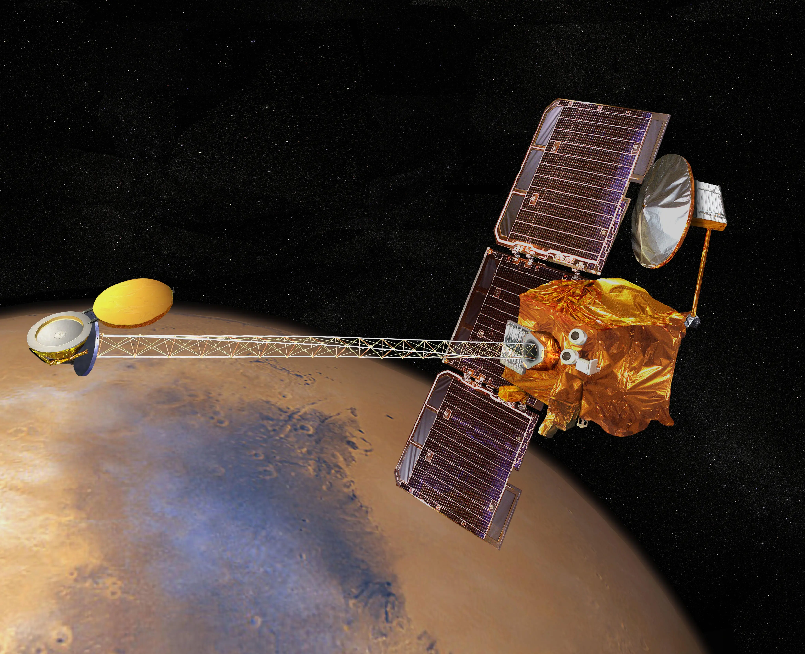

Mars Odyssey
In 2001 the Mars Odyssey began to Orbit Mars and thanks to scientific and tehcnological advancements NASA was able to retreive spatial data of Mars' surface wihch was never seen by austronauts before. With the help of GIS, which is used for geographic Earth analysis, the mapping of exoplanets and other celestial bodies. This was made achieveable due to the abilities of converting data and images from rovers and sattelites into spatial data.
"Mars Odyssey" credits to NASA